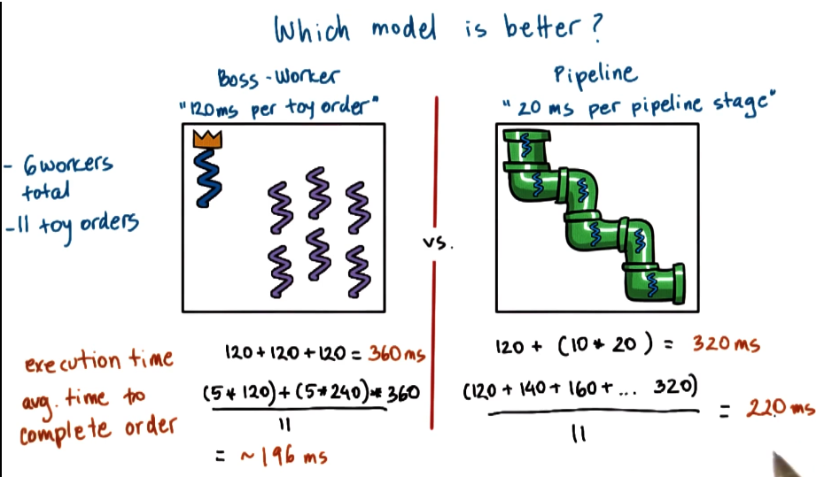
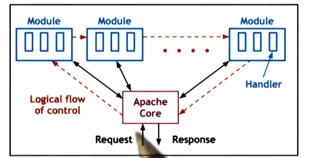
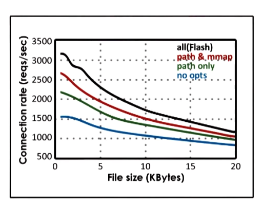

GIOS Lecture Notes - Part 2 Lesson 5 - Thread Performance Considerations
Which Threading Model is Better?
- Boss-worker vs Pipeline from previous lecture
- Depending on circumstances, either model might come out ahead in prior example 
- ERRATA: avg. time to complete order for boss worker should be: ((5120) + (5240) + 360) / 11
- This shows that selecting based on avg completion time or total time to complete all orders results in a different model “winning”. Also, these results would change based on order and thread number configuration
Are Threads Useful (redux)
- Threads are useful because of:
- parallelization - speed up
- specialization - hot cache
- efficiency - lower memory requirement and cheaper synchronization
- Threads hide latency of IO operations even on single CPU rigs
- How to evaluate depends on your use case (aka metrics)
- For a matrix multiply application
- we care about execution time
- For a web service application
- we care about number of client requests processed over time
- we care about response time
- Avg, min, max, distribution of above must all be considered
- For hardware
- we care about higher utilization (e.g. CPU)
- For a matrix multiply application
Performance Metrics Introduction
- Metrics == a measurement standard that:
- Can be measured and quantified
- Examples: Execution time
- of the system we’re interested in
- Example: software implementation of a problem
- can be used to evaluate the system behavior
- its improvement compared to other implementations
- Can be measured and quantified
- Big list of possible metrics
- Execution time
- Throughput
- how many jobs will be completed over a period of time
- can be measured at multiple scales. single box, whole DC, etc
- Request rate
- CPU utilization
- Wait time
- when will job start being executed
- Platform efficiency
- How well resources are utilized to deliver throughput
- Important because money made on job completion, but money spent on more resources
- Performance / $
- How much can be done with additional expenditure
- Performance / Watt
- Same as above, but with expenditure measured in electricity used
- Percentage of SLA violations
- How often do we miss our provided SLAs?
- Client-perceived performance
- Example given is in video applications, humans can only see 30FPS. Getting above 30FPS isn’t worth as much as never dipping below that level.
- Aggregate performance
- May be less concerned with individual outliers, and more concerned with average of any above metric for all tasks
- Average resource usage
- Extends beyond just CPU. Consider memory, file system, etc.
- Ideally, metrics would be obtained from experiments with real software deployment, real machines, real workloads. However, that is often not an option.
- In these cases, we resort to toy experiments representative of realistic settings
- Supplement these with simulation of desired environment and settings
- These are referred to as a TESTBED
Thread Usefulness (again)
- Depends on metrics
- Depends on workload
- Configuration drives what the useful implmentation will be
- Toy shop example above
- In related fields
- a different type of graph might result in a different shortest path algorithm performing best
- Different file patterns might result in different file systems performing best (e.g frequency of reads vs writes)
- IT DEPENDS!
- almost always the right answer, but almost never accepted
Multi Process vs Multi Threaded
How to best provide concurrency
- Multiple threads vs multiple processes
- Example: Web Server
- concurrent processing of client requests
- Steps in a simple web server
- client/browser sends request
- web server accepts request
- server processing steps
- This is the big decision point.
- Steps vary a lot in type and scale.
- They may block or not depending on system state.
- respond by sending file (or error message)
- Example: Web Server
- Multi Process Web Server
- One easy way to achieve concurrency is to have multiple instance of the same process
- Pros
- Simple programming. Figure out steps once and then reuse.
- Cons
- High memory usage
- Costly context switch
- Hard/costly to maintain shared state across processes
- Tricky port setup
- Pros
- One easy way to achieve concurrency is to have multiple instance of the same process
- Multi Threaded Web Server
- Multiple execution contexts, multiple threads, all processing a request in parallel
- Example given shows all threads executing all steps. Alternative implementations would be boss-workers or pipeline, all would work here
- Pros
- shared address space
- shared state
- cheap context switch
- Cons
- Not a simple implementation
- requires synchronization
- requires underlying support for threads (not really an issue today, but used to be)
- Pros
Event Driven Model
- Single address space
- single process
- single thread of control
- Event dispatcher checks for incoming events in a loop, invokes handlers
- Events may correspond to
- receipt of request
- completion of send
- comnpletion of disk read
- Dispatcher == state machine
- external events
- call handler == jump to appropriate code for event received
- handler will jump back to dispatcher loop when done
- Handler == sequence of code that responds to events
- run to completion
- if they need to block they initiate blocking operation and pass control back to dispatch loop
Concurrency in Event Driven model
- MP and MT = 1 request per execution context (either process or thread)
- Event Driven = many requests interleaved in an execution context
- Single thread switches what it’s doing
- Example Stage 1
- client c1 => appears, gets to IO, waits on IO
- client c2 => appears, gets to recv, wait on recv
- client c3 => appears, currently in accept connection
- Example Stage 2
- client c1 => progresses to send, wait on send
- client c2 => progresses to read, wait on disk IO
- client c3 => progresses to recv, wait on recv
- Each of these 3 will progress whenever not blocked, while others are blocked (or just schedule between them while none are blocked)
Why use Event Driven model?
- on 1 CPU we said before “threads hide latency”
- if t.idle > 2* t_ctx_switch then we should switch to hide latency
- if t_idle == 0 then context switching just wastes cycles that could have been used for request processing
- process request until waiting is necessary, then and only then we switch to another request
- In the case of multiple CPUs this still works, especially when we have more requests than CPUs
- For example, we could have an Event Driven process on each CPU
- However, must have mechanisms to direct right events to right CPU. These mechanisms exist, but details left for the student, not covered.
- For example, we could have an Event Driven process on each CPU
How to use Event Driven model
- At lowest level we need network and disk read/write, usually represented as sockets and files
- both of those are, internally, represented as file descriptors
- event == input on file descriptor (FD)
- Which file descriptor?
- select() call takes a range of FD and returns first that has input on it
- poll() another option
- But both have to scan through all FD until they find one that matches
- epoll() is newer API eliminates some of the wasted search effort
- Pros
- single address space
- single flow of control
- still jumping all over, so complicated control flow, even if there is only one
- smaller memory requirement
- no context switching
- no synchronization
- simpler programming
Problems with Event Driven Model
- A single blocking IO call or handler can block the whole damn thing
- One solution is to use asynchronous IO Operations (or syscalls)
- process/thread makes system call
- OS obtains all relevant info from stack, and either learns where to return results or tells caller where to get results later
- process/thread can continue and come back later to get results
- Requires support from kernel (e.g. KLT) and/or device (e.g. DMA)
- Will cover this more later, but for now we need to know that they unblock the central calling process
- Fits well with event driven model
- But what to do if Async IO calls aren’t available?
- Even today, fancier hardware IO might not support async
- Helpers to the rescue!
- designated for blocking IO operations only
- pipe/socket based communication with event dispatcher
- select/poll still ok because it’s still an FD
- helper blocks, but main event loop (and process) will not!
- This is the AMPED model proposed in Pai paper!
- Used processes because multithreading was not supported on some target systems at the time
- In theory could also be AMTED and use threads
- Pros
- resolves portability limitations of basic event driven model
- smaller footprint than regular worker thread
- Will have helper only for number of concurrent blocking operations, as opposed to for every single request.
- Cons
- applicable only to certan classes of applications
- obstacles with event routing on multi CPU systems
Flash: Event-Driven Web Server
- An event-driven webserver (AMPED)
- with asymetric helper processes
- helpers used for disk reads
- from the static site web 1.0 days
- pipes used for communication with dispatcher
- helper reads file in memory (via mmap)
- dispatcher checks (via mincore) if pages are in mapped memory to decide whether to use ‘local’ handler or pass request to helper
- this check represents some overhead, but results in big savings as it allows us to avoid blocking IO operation whenever file is found in memory
- Flash performs application-level caching of both data and computation at multiple levels
- e.g. files and pathname translations
- trades space for time in a smart way
- Flash also performs some optimizations that take advantage of the hardware, notably the Network Interface Card (NIC)
- Alignment of data for direct memory access (DMA)
- Use of DMA with scatter-gather => vector IO operations
- These are common optimizations now, but were novel when Pai paper was written
Apache Web Server
- Popular open source web server
- Compared against in Pai paper, different architecture than Flash 
- Core == basic server skeleton
- Modules == 1 per functionality
- Flow of control is similar to event driven model
- each request passes through all modules
- BUT
- combination of MP and MT
- each process == boss/worker with dynamic thread pool
- Number of processes can also be dynamically adjusted
- tuned by number of outstanding connections, number of pending requests, CPU usage, etc
Experimental Methodology
- Experiments should be constructed so they can support the argument you are trying to make
- Define comparison points
- What systems are you comparing?
- Pai paper
- MP (each process single thread)
- MT (boss-worker)
- Single Process Event Driven (SPED)
- Zeus (SPED with 2 processes)
- Apache (v1.3.1 MP)
- Compare all against Flash (AMPED model)
- Pai paper
- What systems are you comparing?
- Define inputs
- What workloads will be used?
- Pai paper
- Realistic request workload
- distribution of web page accesses over time
- Controlled, reproducible workload
- trace-based (from real web servers)
- CS web server trace (Rice University)
- very large, did not fit in memory
- Owlnet trace (Rice University)
- smaller, would usually fit in memory
- Synthetic workload
- assess best and worst case scenarios
- assess what if scenarios
- Realistic request workload
- Pai paper
- What workloads will be used?
- Define metrics
- How will you measure performance?
- Pai paper
- Bandwidth == bytes/time
- total bytes transferred from files / total time
- Connection Rate == request/time
- total client connection / total time
- Evaluate both as a function of file size
- larger file size => amortize per connection cost => higher bandwidth
- larger file size => more work per connection => lower connection rate
- Bandwidth == bytes/time
- Pai paper
- How will you measure performance?
Experimental Results
- Best case Numbers
- synthetic load
- n requests for same file
- therefore always cached
- Measure bandwidth
- bw = n * bytes(F)/time
- file size of 0-200kb
- vary work per request
- assume as we increase filesize bandwidth will increase
- results show curves for all servers compared
- Observations
- when file size is small, bandwidth is low. as file size increases, bandwidth increases. true for all
- SPED has best performance
- Flash AMPED extra check for memory presence
- Zeus has anomaly due to misalignment for DMA operations
- MT/MP take hits on extra sync and context switching
- Apache lacks optimizations
- synthetic load
- Owlnet Trace
- Observations
- trends similar to best case
- small trace, mostly fits in cache
- sometimes blocking IO is required
- when this happens SPED will block
- but Flash’s helpers resolve the problem
- Observations
- CS Trace
- Observations
- larger trace, mostly requires IO
- SPED worst => lack of async IO
- MT better than MP
- memory footprint
- cheaper (faster) synchronization
- Flash best
- smaller memory footprint
- more memory for caching
- as a result of caching, fewer requests lead to blocking IO
- no synchronization needed
- Observations
Impact of optimizations

- Flash with optimizations
- path == directory lookup caching
- path and mmap == directory lookup and file cached
- all == directory lookup and file and header cached
- Optimizations are important!
- Apache likely would have fared much better if optimizations had been included for it
Summary of Performance Results
- When data is in cache
- SPED » AMPED Flash
- Flash has an unnecessary test for memory presence
- SPED and AMPED Flash » MT/MP
- MT/MP have overhead for sync and context switching
- SPED » AMPED Flash
- With disk-bound workload
- AMPED Flash » SPED
- SPED blocks because it does not have support for async IO
- AMPED Flash » NT/MP
- more memory efficient and less context switching
- AMPED Flash » SPED
- There are still challenges with Event Driven architecture
- Hard to take advantage of multiple cores
- Hard to route signals to correct core
- Processing itself may not be suitable for this architecture
Design Relevant Experiments
- Much thought and planning must go into deisgn
- Relevant experiment
- Will lead to statements about a solution that are credible and impactful to others
- Example: Web Server Experiment
- Clients care about response time
- Operators care about throughput
- Possible goals
- show that you improve both response time and throughput that’s great!
- improving response time only is good
- improving resposne time at the cost of throughput might
- maintains response time when request rate increases
- goals drive selection of metrics and confiugation of experiments
- Rule of thumb for picking metrics
- standard metrics in industry are a good starting point
- gives you a broader audience
- metrics answering the why/what/who questions?
- why am I doing this?
- what do I hope to show or accomplish?
- who cares?
- standard metrics in industry are a good starting point
- Picking the right configuration space
- system resources will drive this
- hardware (CPU, memory)
- software (# of threads, queue sizes)
- Workload
- e.g. web server: request rate, concurrent requests ,file size, access pattern
- Pick!
- choose a subset of configuration parameters that are most impactful on the selected metrics
- pick ranges for each variable factor (must also be relevant)
- pick relevant workload!
- but also include best and worst case scenarios
- they also bring value as they highlight limitations and opportunities that may exist
- but also include best and worst case scenarios
- Pick useful combinations of factors
- many just reiterate the same point. After a bit of confirmation this is just a waste
- Vary one factor at a time to draw reasonable results
- system resources will drive this
- Consider the baseline and competition
- compare system to
- state of the art
- or most common practice
- ideal best/worst case scenarios
- compare system to
Advice on Running Experiments
- Now it is easy! (and fun)
- run test cases n times
- compute metrics
- represent results
- graph selection matters a lot, won’t go into detail but look at class papers for examples
- Draw real conclusions, and lay them out!